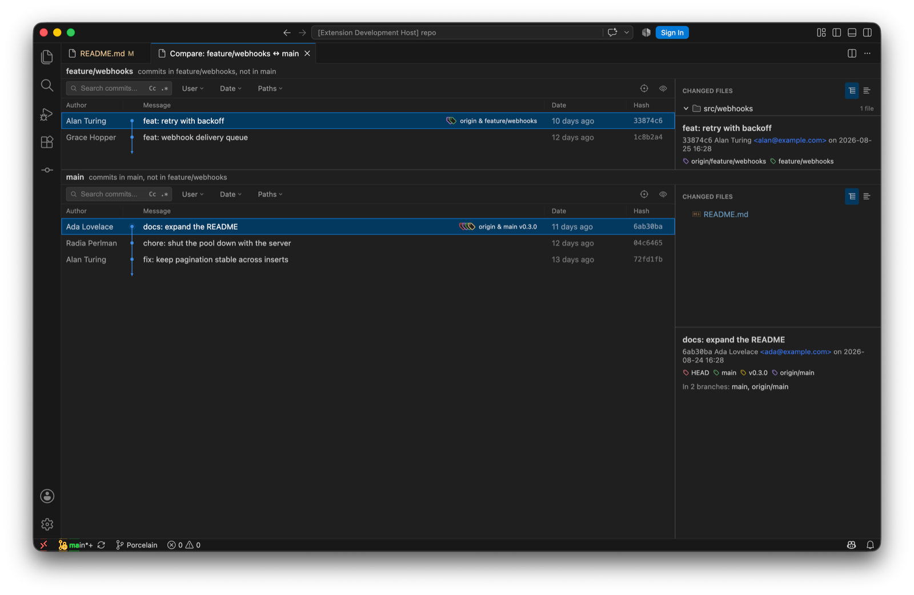

The Porcelain panel is IntelliJ's Git tool window: branch tree on the left, the graph in the middle, and the changed files and details of the selected commit on the right. Every column can be resized or hidden, and the whole panel drags to the side or maximises like any other VS Code panel.
| Control | Does |
|---|---|
| Search | Filters by message, literal and case-insensitive by default. The Cc toggle matches case; .* treats the text as a regular expression. |
| Branch | Multi-select. The dropdown stays open while you tick branches, and the log shows the union of everything reachable from them. A plain click in the branch tree replaces the filter with that one ref. |
| User | Every author in the repository, most commits first, with your configured user.name pinned to the top as "(me)". |
| Date | Today, last 7, 30 or 90 days, or a custom After/Before pair, sent to git as inclusive day bounds. |
| Paths | One pathspec per line. Narrows the log to commits touching those files or folders. Show File History from an editor adds a file-history chip here. |
| Go to | ⌘G. Branch and tag completion; free text resolves as a full or abbreviated hash. The log navigates there and clears any filter that would've hidden it. |
| View Options | The eye. Graph modes, highlighters, presentation and columns, below. |

| Group | Options |
|---|---|
| Graph | Sort Topologically, First Parent Only, No Merge Commits, Show Long Edges, and the collapse and expand actions. These map to --topo-order, --first-parent and --no-merges. |
| Highlight | My Commits emphasises commits by your configured user.name. Dim Merge Commits. Fade Other Branches is the reachability dimming, now toggleable. All persisted. |
| Presentation | Compact References, Tag Names on or off, and Commit Timestamp to show the committer date in place of the author date. |
| Columns | Author, Date and Hash can each be hidden. Widths are dragged and remembered. |

Selecting one commit shows its changed files, grouped by directory, and below them the full message, author, date, the ref chips, and In N branches: which local and remote branches contain it, loaded lazily, with Show all and Hide. Double-clicking a file opens its diff. The file context menu adds Show Diff, Open Repository Version, History Up to Here, Edit Source, Revert Selected Changes, Cherry-Pick Selected Changes, and Copy Path and Copy File Name.
| Item | Does |
|---|---|
| Checkout Revision | Detached HEAD at the commit. |
| Reset Current Branch to Here (Soft / Mixed / Hard)… | The three resets, each with a confirmation. |
| Revert Commit · Drop Commit | Revert creates the inverse commit. Drop rewrites it out of the branch. |
| Cherry-Pick · Cherry-Pick N Commits | A multi-selection is applied oldest first in one invocation, so a stop mid-sequence lands in the same continue/abort/skip banner. |
| Interactively Rebase from Here… · Edit Commit Message… · Squash N Commits… · Fixup… · Undo Commit | The rewriting verbs. See Rewriting history. |
| Compare Versions | With two commits selected: everything that differs between the two snapshots, always read oldest to newest whichever order you selected them in, so work that was added and later reverted between them correctly shows as no change. |
| New Branch… · New Tag… | From the commit. A tag with a message is annotated. |
| Copy Revision Number · Show in Git Log | Copies the hash; navigates a comparison log back to the main log. |

Right-click a local branch, remote branch or tag and choose Compare with Current. Porcelain opens a dedicated editor tab with the commits unique to each side, independent filters per side, and the same changed-files and details panes. The commit context actions work there too.
